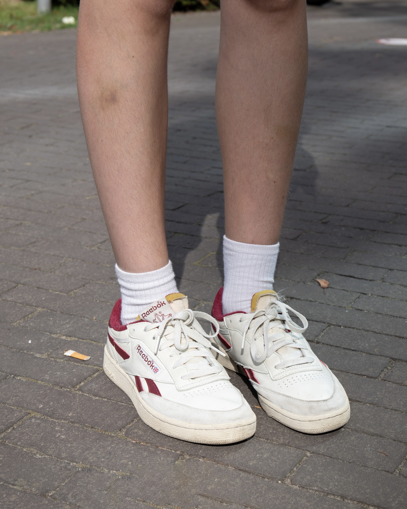
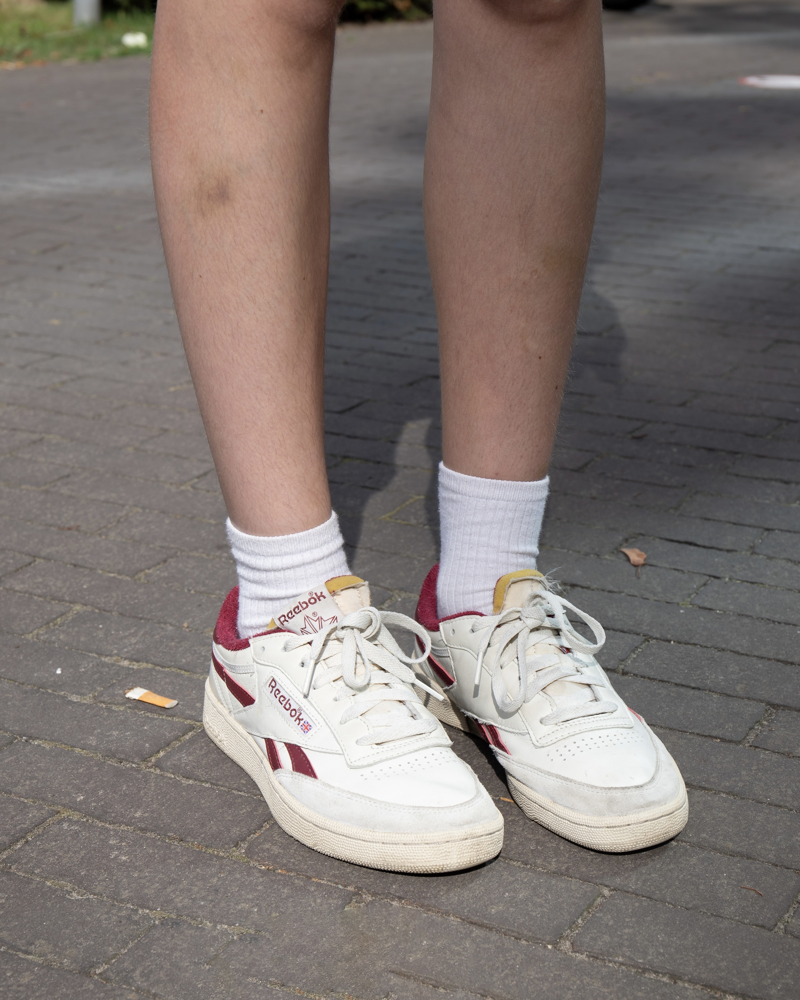

Hallo! Mijn naam is Alisa A.C.F. Schuller, 21 jaar en student Communication & Multimedia Design aan Avans. Hiervoor behaalde ik al mijn mbo niveau 4-diploma in Mediavormgeving.
Mijn voorliefde voor onderzoek en alles willen weten begon al op de basisschool. Spreekbeurten maken was toen al mijn favoriete onderdeel. Tijdens mijn vorige studie specialiseerde ik me vooral in illustreren, productvormgeving en grafische vormgeving. Tegenwoordig richt ik me er meer op om mijn ontwerpen sterker en betekenisvoller te maken door psychologie en onderzoek bewuster in te zetten.
Anderen omschrijven mij vaak als empathisch, nieuwsgierig en leergierig, reflectief, open en eerlijk, maar ook kritisch. Eigenschappen die mij helpen om zowel mijn eigen werk te verbeteren als het verhaal van een ander goed te begrijpen en te vertalen naar een ontwerp.
 
